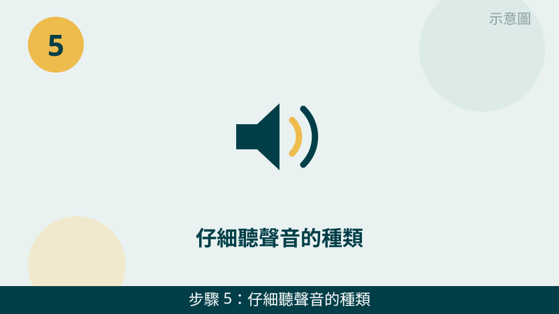
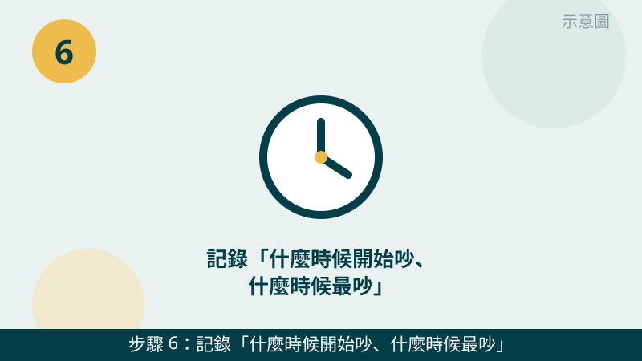

風扇從安靜變成轟轟叫，確實會讓人擔心是不是哪裡壞了。但請先放心：風扇變吵常常只是電腦在努力散熱，不一定是風扇本身壞掉。先照下面的順序檢查，一步一步縮小範圍，很多人整理完就安靜很多了。
開始之前先跟您說明一個判斷原則：「什麼時候吵」和「吵起來像什麼聲音」是兩條最重要的線索。高負載時才吵，和一開機就吵，是兩種故事；持續的風切聲，和摩擦聲、卡卡聲，也指向不同原因。您先留意這兩點，檢查時會更有方向。
風扇的聲音先錄給我們聽
錄一段 10 秒左右的聲音影片，連同工作管理員的效能頁面一起傳 LINE，通常能先分清是高負載、散熱空間還是風扇老化方向。先免費評估、報價透明，確認後再預約維修。
電腦風扇很吵自救檢查清單（由簡到難）
- 1. 先開工作管理員，看風扇吵的時候電腦是不是正在忙。風扇吵的時候按 Ctrl＋Shift＋Esc 開啟工作管理員 →「效能」頁籤，看 CPU 使用率是不是長期很高。怎麼判斷：CPU 長期很高、風扇跟著狂轉，多半是高負載在散熱；CPU 不高、風扇還是一直吵，就往灰塵或風扇老化方向想。
示意圖（非官方截圖） - 2. 關掉高負載的程式，再聽聽看有沒有安靜下來。把遊戲、剪片軟體、開了很多分頁的瀏覽器先關掉，等一兩分鐘讓溫度降下來。怎麼判斷：安靜下來了，就是負載問題，風扇只是在認真工作；還是一樣吵，就不是負載問題，再往下查。
示意圖（非官方截圖） - 3. 清出風扇出風口周圍的空間。先看一下出風口有沒有被雜物、棉被、牆壁擋住，把擋住的東西移開，讓熱氣排得出去。怎麼判斷：移開之後聲音慢慢變小，就是散熱空間不足；移開還是一樣吵，再往下一步查。
示意圖（非官方截圖） - 4. 把電腦墊高、放在平坦通風的桌面上。筆電底部也需要進氣，放在床上、沙發上會把進氣口悶住，風扇只好轉得更用力。請把筆電移到書桌等平坦桌面，底下稍微墊高一點。怎麼判斷：墊高通風後聲音有改善，擺放方式就是原因之一。
示意圖（非官方截圖） - 5. 仔細聽聲音的種類：風切聲、摩擦聲、卡卡聲是不一樣的訊號。持續平穩的風切聲，多半只是轉速拉高；規律的摩擦聲、卡卡聲、忽大忽小，風扇軸承老化或葉片卡到東西的可能性就比較高。怎麼判斷：出現摩擦聲或卡卡聲，請不要用尖銳物去撥葉片，先把聲音錄下來傳給我們判斷。

示意圖（非官方截圖） - 6. 記錄「什麼時候開始吵、什麼時候最吵」，錄一段聲音影片。請記下來：是剛開機就吵，還是用一陣子才吵；並用手機錄一段 10 秒左右的聲音影片。怎麼判斷：剛開機就吵，比較像風扇本身或灰塵問題；用久才吵，比較像溫度升高後轉速拉高。把影片傳給我們，判斷會快很多。

示意圖（非官方截圖）
別再自己試了，出現這些情況請立刻停手
- 想自己拆機清散熱器但不確定怎麼拆——請先拍照問我們，不要硬拆，拆壞排線或弄斷卡扣反而更貴
- 不要用尖銳物去撥風扇葉片——葉片很脆弱，撥斷了風扇就不能用了，手指也有受傷風險
- 風扇完全不轉、轉一下就停、或是伴隨焦味——請立刻停用，不要再開機測試
- 想用噴罐清潔但不確定噴法——請先拍照問我們，不要把噴罐倒著噴進機身；筆電電池有膨脹、鼓起的跡象時，更不要自行拆卸或擠壓
如果您的電腦是打遊戲、剪影片時風扇才變吵，同時又感覺機身很燙，也建議留意一下過熱狀況：高負載噪音和過熱常常是同一件事的兩種表現。我們的檢測會把溫度、風扇狀態、灰塵情形一起看，找出真正的原因再報價給您。
常見問題
台中電腦風扇很吵，是不是快壞了？
不一定。風扇吵最常見的原因是電腦正在高負載運轉、或是出風口被擋住散熱不良，風扇本身老化只是其中一種可能。先照本文 6 步看負載、清出風口，還是吵再把聲音錄下來傳給我們判斷；評估不收費，請放心傳。
風扇吵可以自己拆開清灰塵嗎？
不建議您自己拆機清理。筆電與主機的散熱器、風扇排線拆法各不相同，硬拆容易弄斷卡扣或排線，風扇葉片也很脆弱。先把出風口外圍清乾淨、把電腦墊高通風，內部清理的部分交給我們檢測時一併處理，檢測費 $300，有修全額折抵，修好才收費。
風扇聲音錄影傳 LINE 就可以先判斷嗎？
可以先給方向。錄一段 10 秒左右的聲音影片，連同工作管理員的效能頁面一起傳給我們，通常能先分清是高負載、散熱空間還是風扇老化方向；要完全確認，還是需要實機檢測，這部分評估不收費，請放心傳。